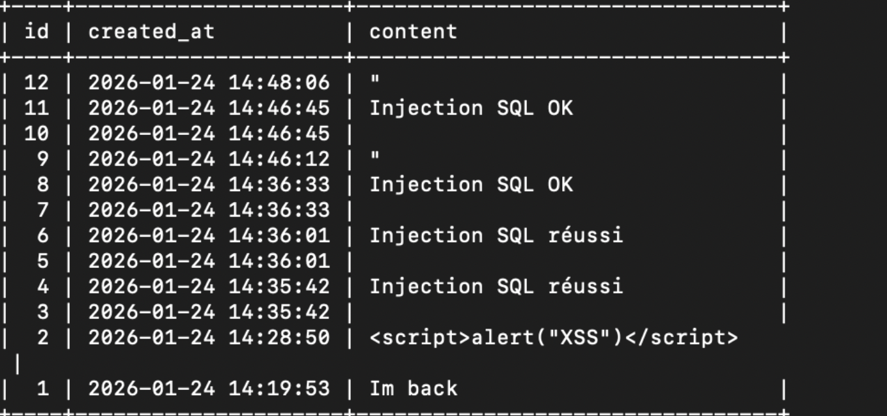
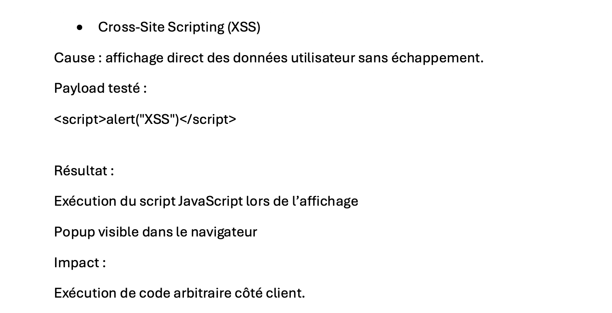

1) Développement local
Création d’une application permettant de poster et afficher des commentaires.
- Formulaire de saisie + traitement serveur
- Insertion des données en base
- Affichage de la liste des commentaires
2) Déploiement sur VM
Déploiement sur une VM Debian accessible à distance.
- Installation Apache / PHP / MariaDB
- Transfert des fichiers (SFTP)
- Création de la base + utilisateur dédié
3) Vulnérabilités testées
Identification et exploitation dans un cadre pédagogique.
- SQLi : requêtes construites par concaténation
- XSS : affichage direct sans échappement
- CSRF : absence de jeton et de vérification
4) Correctifs appliqués
Sécurisation de l’application avec des bonnes pratiques.
- PDO + requêtes préparées contre SQLi
htmlspecialchars()contre XSS- Token CSRF en session + vérification
Captures et démonstrations
>

Injection SQL (SQLi) — erreur / manipulation de requête

XSS — exécution de script côté navigateur

CSRF — ajout de commentaire via page externe

Correctifs — PDO, échappement, token CSRF